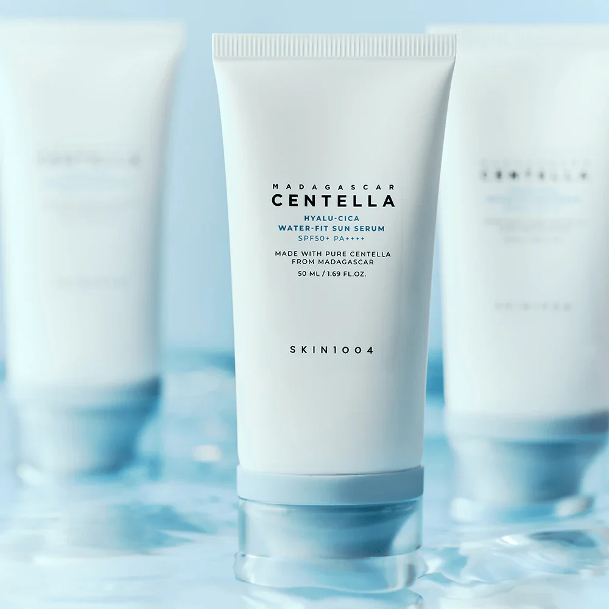
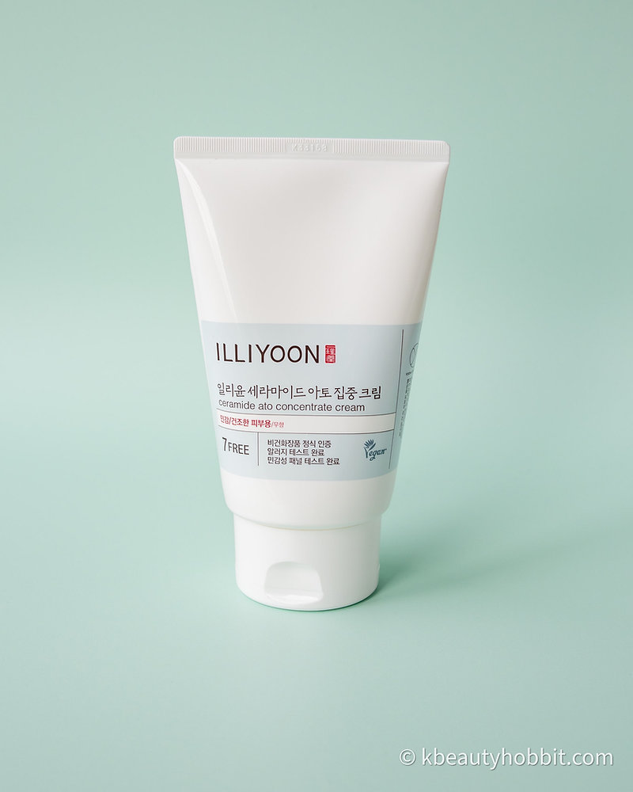

Helpful Products
As someone deeply passionate about skincare, makeup, and hair, I take pride in my extensive knowledge of the products I recommend. With years of experience exploring various brands, ingredients, and formulations, I've cultivated a deep understanding of what works best for different skin types, concerns, and preferences. I believe in the transformative power of quality skincare and makeup products to enhance one's natural beauty and boost confidence. By staying informed about the latest trends, advancements, and industry insights, I ensure that the recommendations I offer are not only effective but also tailored to meet the unique needs of each individual. Whether you're seeking a gentle cleanser for sensitive skin, good tools for you hair, or a long-lasting foundation for a flawless complexion, I'm confident that my expertise and dedication to excellence will help you discover the perfect products to elevate your beauty routine and achieve your beauty goals.
Skincare products I recommend:
Ideal for alleviating general redness, acne, eczema, and rosacea, this toner boasts a non-comedogenic formula, making it ideal for individuals with acne-prone and sensitive skin. Moreover, being both vegan and paraben-free, this toner is suitable for all skin types!
The Centella & Niacinamide Oil & Acne Control Sunscreen is meticulously crafted to cater to a wide range of skin types, ensuring suitability for individuals with diverse skincare needs. Its formulation is particularly beneficial for oily and acne-prone skin, offering targeted control and management of acne-related concerns. However, beyond its specialization for these skin types, this sunscreen is versatile and adaptable, making it an excellent choice for individuals across the entire spectrum of skin types, from dry to sensitive, and everything in between.
Featuring a non-greasy formulation, this product is meticulously crafted to be free of parabens, animal-derived ingredients, mineral oil, pigments, fragrance, triethanolamine, imidazolidinyl urea, and PEG sulfate. Its hypoallergenic formula makes it exceptionally suitable for sensitive skin, ensuring gentle yet effective care. Additionally, this product is designed to alleviate dryness and itching, providing much-needed relief for skin discomfort.
Hyaluronic Acid 2% + B5 offers swift, noticeable hydration, enhancing skin softness, smoothness, and overall health. Its featherlight formula swiftly replenishes skin moisture levels, delivering lasting hydration throughout the day. Furthermore, it aids in moisture retention, visibly plumping the appearance of dry, dehydrated skin.
The Clean it Zero Original Cleansing Balm is designed with gentleness in mind, making it suitable for all skin types. Meanwhile, the Clean it Zero + Pore Clarifying variant excels in addressing blemishes, excess oil, and clogged pores, particularly tailored for oily and acne-prone skin types.
Makeup products I recommend:
E.l.f. Cosmetics has demonstrated its commitment to compassion by transitioning its entire brush collection to synthetic hair, eliminating the use of animal-derived materials. Traditionally, makeup brushes have been crafted from animal hair, sourced from animals such as squirrels, minks, sables, horses (referred to as "pony" hair), or goats. However, E.l.f. Cosmetics has taken a significant step towards cruelty-free practices, ensuring that all its brushes are now vegan-friendly.
NARS Water-Based Foundation offers a lightweight and hydrating formula that provides seamless coverage for a natural-looking finish. Infused with water-based ingredients, this foundation delivers a refreshing and breathable feel upon application, making it suitable for various skin types, including dry and sensitive skin. Its water-based formulation ensures that the foundation blends effortlessly into the skin, leaving it looking radiant and luminous without feeling heavy or cakey.
Fenty Contour products are renowned for their versatility and ability to sculpt and define the face with precision and ease. Offering a range of cream and powder contour options, Fenty Beauty's contour products are designed to cater to a diverse array of skin tones and preferences.The cream contour formulas are creamy and blendable, allowing for seamless application and effortless blending. They provide buildable coverage, enabling users to achieve their desired level of contour intensity, from subtle definition to more dramatic sculpting.
Too Faced Concealer is renowned for its creamy texture and high-performance formula, designed to effectively camouflage imperfections and brighten the under-eye area. With a wide range of shades to suit various skin tones, this concealer offers versatile coverage options, from light to full coverage, catering to individual preferences and needs.The creamy texture of the Too Faced Concealer allows for smooth and seamless application, effortlessly blending into the skin for a natural-looking finish
Urband Decay All-Nighter Setting Spray
Urban Decay Setting Spray is a cult-favorite makeup setting spray known for its long-lasting and mattifying formula that helps keep makeup in place for hours on end. Designed to lock in makeup and prevent smudging, fading, or melting throughout the day, this setting spray has become a staple in many makeup routines.The Urban Decay Setting Spray comes in various formulations to cater to different skin types and needs. The Original All Nighter Setting Spray is a classic option that provides a weightless and breathable finish, ensuring makeup stays put for up to 16 hours without melting or settling into fine lines. It helps control shine and keeps makeup looking fresh and vibrant throughout the day and night.